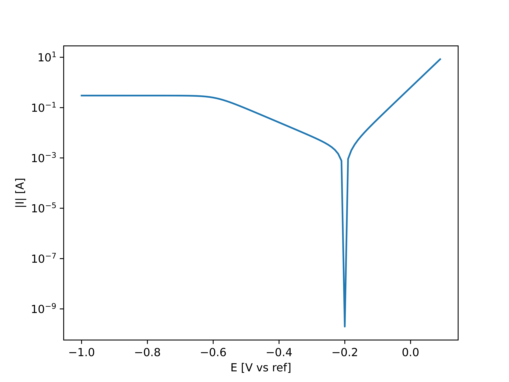

Example 1: Tafel extrapolation (Linear fit)¶
In this example, you will see how to apply Tafel extrapolation to your polarization curve. We will start with making an artificial Polarization curve:
>>> import numpy
>>> I_corr = 0.002 # The corrosion current [A]
>>> E_corr = -0.2 # The corrosion potential [V vs Ref]
>>> b_a = 0.08 # The anodic Tafel slope [V]
>>> b_c = 0.18 # The cathodic Tafel slope [V]
>>> I_L = 0.3 # The limiting current [A]
>>> E = np.arange(-1.0, 0.1, 0.01)
>>> I = I_corr * np.exp(2.3*(E-E_corr)/b_a) - (((I_corr*np.exp(2.3*(E_corr-E)/b_c))**3)/(1+((I_corr*np.exp(2.3*(E_corr-E)/b_c))/I_L)**3))**(1/3)
This example curve looks as following (in a semilogarithmic plot):
{kind=link}
Now we initiate the polarization curve object. Here we get the option to correct the data for the IR drop, and convert the current into current density. Let’s say the surface area corresponding to this artificial curve is 10 cm^2, and the IR-drop is negligible:
>>> from polcurvefit import PolCurveFit
>>> Polcurve = PolCurveFit(E,I,sample_surface=10E-04)
We can visualise the corrected polarization curve
>>> plt.plot(Polcurve.E,np.abs(Polcurve.i))
>>> plt.yscale('log')
>>> plt.xlabel('E [V vs ref]')
>>> plt.ylabel('|i| [A/m2]')
>>> plt.show()

From the plot we can see that if we would like the cathodic Tafel slope, we should perform the linear fit between approximately -0.55 V vs ref and -0.3 V vs ref. We can also specify E_corr, so that the function can also supply us with the corrosion current density:
>>> results = Polcurve.linear_fit(window=[-0.55,-0.3], E_corr = -0.2)
>>> print('The determined Tafel slope: ', results[3], '[V]')
>>> print('The determined corrosion current density: ', results[2], '[A/m2]')
The determined Tafel slope: -0.1819774491837005 [V]
The determined corrosion current density: 2.0395128285571236 [A/m2]
We can now save the results (the fitted parameters and curve) to a text file:
>>> Polcurve.save_to_txt(filename = './results_Tafel_fit')
The tuple ‘results’ includes also the fitted curve. This can be used to manually visualise the results. However, this can also be automatically done by using the following function, which saves the figures in a specified output folder:
>>> Polcurve.plotting(output_folder='Visualization_Tafel_fit')